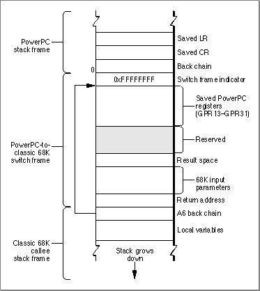

Calling Classic 68K Code From PowerPC Code
This section describes how the Mixed Mode Manager switches modes from the PowerPC native environment to the classic 68K emulated environment. When PowerPC code calls classic 68K code, the call must go through the routineCallUniversalProc.The call to
CallUniversalProcinvokes the Mixed Mode Manager, which verifies that a mode switch is necessary. At that point, the Mixed Mode Manager saves all nonvolatile registers and other necessary information on the stack in a switch frame. Figure 6-4 shows the structure of a PowerPC to classic 68K switch frame.Figure 6-4 A PowerPC to classic 68K switch frame

Once the switch frame is set up, the Mixed Mode Manager sets up the 68LC040 Emulator's context block and then jumps into the emulator. When the routine has finished executing, it attempts to jump to the return address pushed onto the stack. That return address points to a "return-to-native" signal (currently stored in the reserved area of the stack) that is used by the Mixed Mode Manager and the emulator to transfer back to PowerPC code. Once this is done, the Mixed Mode Manager restores native registers that were previously saved and deallocates the switch frame. Control then returns to the caller of
CallUniversalProc.
- IMPORTANT
- As currently implemented, the instruction that causes a return from the 68LC040 Emulator to the native PowerPC environment clears the low-order 5 bits of the Condition Code Register (CCR). This prevents 68K callback procedures from returning information in the CCR. If you want to port classic 68K code that calls an external routine that returns results in the CCR, you must instead call a classic 68K stub that saves that information in some other place.